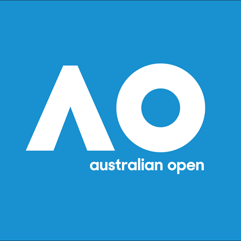

The Australian Open is a tennis tournament held annually over the
last fortnight of January in Melbourne, Australia.
The tournament is the first of the four Grand Slam tennis events held each year,
preceding the French Open, Wimbledon, and the US Open.
Current champions
Novak Djokovic
was the winner of the Men's Singles in 2019.
It was his 15th Major Singles title and
his seventh at the Australian Open.
Naomi Osaka
was the winner of the Women's Singles in 2019.
It was her 2nd Grand Slam singles title,
following her victory at the 2018 US Open.
Nicolas Mahut
was part of the winning Men's Doubles in 2019.
It was his 4th Grand Slam men's doubles title and
his first at the Australian Open.
Pierre-Hugues Herbert
was part of the winning Men's Doubles team in 2019.
It was his 4th Grand Slam men's doubles title and
his first at the Australian Open.
Zhang Shuai
was part of the winning Women's Doubles team in 2019.
It was her 1st Grand Slam women's doubles title.
If you have time, you can read more
about this incredible tournament on
Wikipedia.